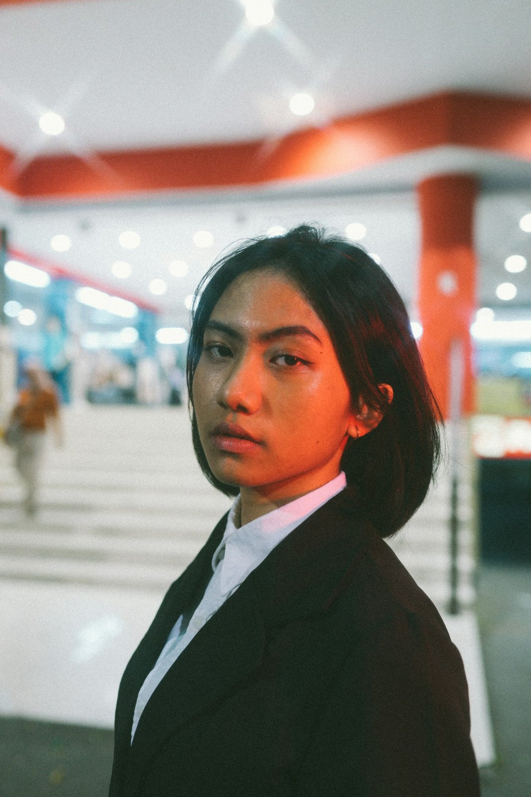

Le idee migliori nascono dal lavoro insieme, e il nostro compito è essere un partner di fiducia per la tua crescita.
Costruiamo identità, racconti visivi e direzione creativa su misura, per aiutare imprese e professionisti a trovare la loro voce.
studioottobre.it